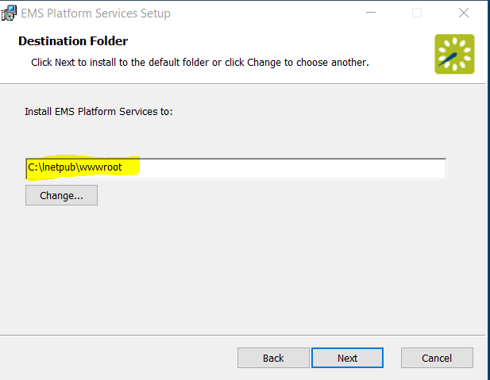
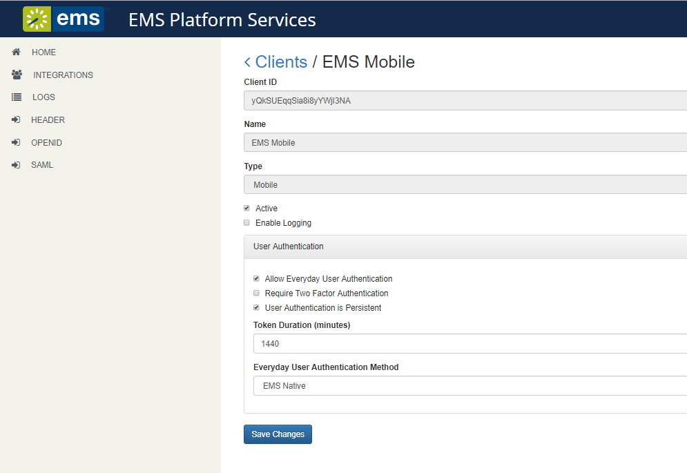

Installation and Basic Setup
This topic provides instructions on how to do the following:
-
Install EMS Platform Services on Your Web Server
-
Initial Configuration
-
Enable Everyday User Booking Templates
See Also: System Requirements
1. Install EMS Platform Services on Your Web Server
- Navigate to emssoftware.com/support. Log in and locate EMS Platform Services.
- Download the EMSPlatformServices.msi file.
- Run this file on your web server.
Note: You will need to enter the SQL server and EMS database, configured to allow external connections. Make a note of the database name. The typical install path is C:\Inetpub\wwwroot.

- When all prompts have been completed, click Install. The API is installed on your web server.
- You will also need a Virtual Directory Name (typical default is EMSPlatformServices). Make a note of the new site you have created.
2. Initial Configuration
- Access URL for (e.g., https://yourcompany.com/ems-platform-api).
- Log in using your credentials depending on your authentication type. Please refer to configuring Platform Services in the Admin Portal for more details.
- Click on the Integrations tab in the sidebar and select EMS Mobile:

- Select authentication method for everyday users. supports the following authentication methods (refer to the guide linked below for guidance in each type of setup):
- EMS Native Authentication
- LDAP Authentication
- NTLM Authentication
- Open ID Connect Authentication
- SAML Authentication
- Header Authentication
Note: In addition to the authentications above, EMS Mobile App supports Two-factor authentication and Persistent authentication.
- Click User authentication is persistent box to allow the user to remain logged into the . Token duration field determines the duration of persistent login. Default value is 1440 minutes (1 day). This duration can be edited by updating the token duration field.
- Install the (private or public deployment) on user devices and then on each, import the Platform Services URL (based on your user authentication preference). See Deploy the EMS Mobile App for more information.
3. Enable Everyday User Booking Templates
EMS V44.1 allows you to select which process templates (e.g "web process templates") will be enabled on your users' mobile devices. From the Admin page for templates in the , you will see an Enable for Mobile checkbox on the first tab of the template dialog box:

Note: is designed to make and edit simple reservations for users "on the go." At this time it cannot handle service requests, video conference bookings, or complex workflows. Please consider this when you decide which templates should be enabled for the EMS Mobile App App. Additionally, you can only change the name and icon of the mobile app through private deployment via MDM. Please refer to your MDM guide for instructions on how to change the name and icon of the mobile app.